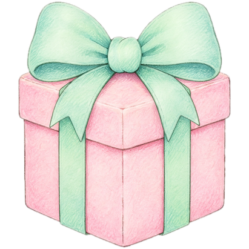

לגננות, למורות ולנשות טיפול
כלי המיפוי שיעזור לך למלא קבוצות הכנה לכיתה א' ובהדרכת הבונוס: איך להפוך את פגישת המיפוי לפגישה שבסופה ההורים רוצים להירשם


123456789⌫0✓
מיפוי דיגיטלי ומשחקי שיעזור לך לבדוק בקלות את רמת המוכנות של ילדי הגן ולהעביר את המידע להורים בצורה מקצועית
שקופית אחרי שקופית: מה להגיד לילד, מה לסמן, ובסוף דוח מסודר ונספחים שאפשר להגיש להורים.
בונוס: מיפוי דיגיטלי לכיתות א-ב-גמחיר השקה עד חנוכה אני רוצה את כלי המיפוי


 כתיב פונטי ואותיות
כתיב פונטי ואותיות הברות לפי סימני ניקוד ומילות תפל
הברות לפי סימני ניקוד ומילות תפל